Compressors
Compressors
--> [ Input Shaft, Loosening and Tightening ]
--> [ A/C Compressor Input Shaft ]
--> [ Drive Plate with Overload Protection ]
--> [ A/C Compressor Drive Plate ]
--> [ Converting Hardy Discs to Gate Connection ]
--> [ Mount with Freewheel on A/C Compressor ]
--> [ A/C Compressor with Drive Unit, Engine Code BAR ]
--> [ A/C Compressor, Engine Codes AYH, BKW and BLE ]
--> [ A/C Compressor and Bracket, Engine Codes: BAC, BLK, BPE and BPD ]
--> [ A/C Compressor with Bracket, Engine Code BJN ]
Input Shaft, Loosening and Tightening
Loosening
• The driveshaft can be checked and tightened without opening the refrigerant circuit. Refer to --> [ Drive Plate with Overload Protection, Checking Run-Out and Adjusting ] Adjustments.
- Remove the components that prevent access to the driveshaft. Refer to--> [ A/C Compressor with Drive Unit, Engine Code BAR ].
- Hold the A/C compressor driveshaft - A - in place using an open-end wrench and turn compressor drive unit - B - in the direction of the arrow - C -.
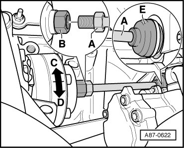
• Do not turn the driveshaft - A -.
• Driveshaft - A - can be slid into drive wheel through the boot - E - after loosening threaded connection.
• After installing the driveshaft - A -, check the boot - E - installation position.
Tightening
- Hold the compressor driveshaft - A - in place using an open-end wrench and turn the compressor drive unit - B - in the direction of the arrow - D - tightening specification 60 Nm.
- After tightening the compressor driveshaft, check the boot installation position - E -.
A/C Compressor Input Shaft
Removing
- Remove A/C compressor. Refer to --> [ A/C Compressor with Drive Unit, Engine Code BAR ]
- Remove the boot - A -
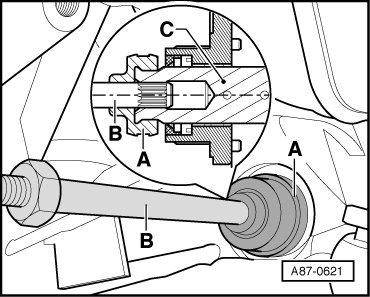
- Remove the driveshaft - B - from the drive pinion splines - C -
• A clamp on the engine toothed drive gear flange - C - prevents the boot - A - from slipping.
Installing
Installation is carried out in the reverse order, when doing this note the following:
- Check the driveshaft - B -. The splines must not have any signs of wear and must be seated in the drive wheel splines - C - without play.
- Coat splines of driveshaft - B - using clutch grease G 000 100 before installing.
- Insert the driveshaft - B - before installing the compressor and slide it into the drive wheel - C - as far as the stop.
- After installing the A/C compressor, check the boot installation position - A -.
A clamp on the power steering pump flange prevents the boot - A - from slipping.
Drive Plate with Overload Protection
- Remove the A/C compressor. Refer to --> [ A/C Compressor with Drive Unit, Engine Code BAR ].
Removing
- Remove bolts - A -.
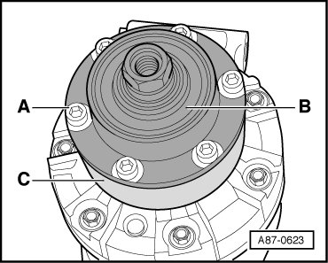
• User a commercially available band wrench with webbed band to counterhold the drive plate - C -.
Installing
- Position drive plate with overload safeguard - B - onto drive plate - C -.
- Insert bolts - A - and tighten them by hand.
- Check run-out of drive plate - B -. Refer to --> [ Drive Plate with Overload Protection, Checking Run-Out and Adjusting ] Adjustments.
- Tighten the bolts - A - tightening specification 10 Nm.
- Check run-out of drive plate - B - again. Refer to --> [ Drive Plate with Overload Protection, Checking Run-Out and Adjusting ] Adjustments.
A/C Compressor Drive Plate
- Remove drive plate with overload safeguard. Refer to --> [ Drive Plate with Overload Protection ].
Removing
- Loosen the drive plate - C - by rotating it in the direction of the arrow - D - using a commercially available band wrench with webbed band. Counterhold the A/C compressor shaft - A - with a counterhold tool - B -.
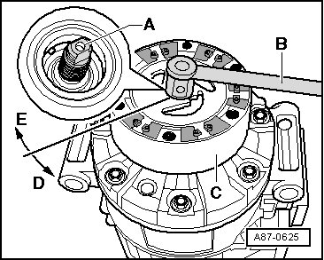
• Depending on the versions of the compressor the compressor shafts are different, an open end wrench or a Socket Wrench (T10001/10) from the Shock Absorber Set (T10001) or retainer (3079) must be used to counterhold.
Installing
- When installing, coat the rubber elements - B - lightly using soapy water as a lubricant.
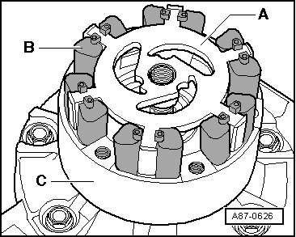
- Insert the rubber elements - B - in the drive plate - A - as shown in the illustration.
- Insert the drive plate - A - with the rubber elements - B - into the drive plate - C - until it makes contact with the compressor shaft.
• This illustration shows the rubber element - B - in version "1". Rubber elements - B - of version " 2" are joined to each other at top.
- Install the drive plate - C - on the A/C compressor shaft - A - by rotating it in the direction of the arrow - E -.
- Tighten the drive plate - C - to 30 Nm by turning it in the direction of arrow - E - with a standard band wrench with a webbed band. Counterhold the A/C compressor shaft - A - with a counterhold tool - B -.
• Depending on the versions of the compressor the compressor shafts are different, an open end wrench or a Socket Wrench (T10001/10) from the Shock Absorber Set (T10001) or Retainer (3079) must be used to counterhold.
Converting Hardy Discs to Gate Connection
Removing
• Order the Adapter (07Z 260 361) before converting from Hardy Discs to a Gate Connection.
• The power steering pump must be replaced.
• Observe notes. Refer to --> [ Engine Compartment Refrigerant Circuit Components, 2 Zone and 4 Zone ] Engine Compartment Refrigerant Circuit Components, 2 Zone and 4 Zone.
Special tools, testers and auxiliary items required
• Multi-point Adapter (3400)
• Counterhold (T10172) with Adapter (T10172/1)
• Torque Wrench (V.A.G 1332)
• Adapter (07Z 260 361)
- Remove engine.
- Remove the A/C compressor. Refer to --> [ A/C Compressor and Bracket, Engine Codes: BAC, BLK, BPE and BPD ].
- Clamp A/C compressor in a vice with protective backings.
- Remove the flange at the overload protection - 5 -.
- Install Adapter (07Z 260 361) - 3 - in A/C compressor - 1 - overload protection - 2 -.
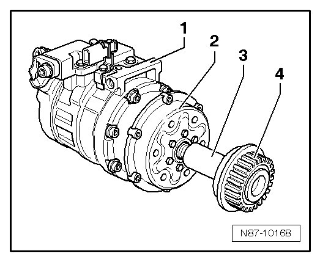
- Install take-up with free-running hub - 4 - on adapter - 3 -.
- Tighten take-up with free-running hub - 4 - with Multi-Point Adapter (3400).
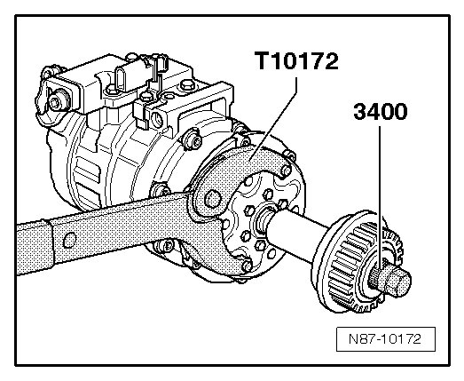
- Lock A/C compressor with Counterhold (T10172) and Adapter (T10172/1) and tighten take-up with free-running hub.
Tightening specification: 80 Nm
Installing
Install in reverse order of removal.
• Should the take-up with free-running hub loosen without the adapter, clamp adapter upright in an appropriate vise with protective backings. This ensures loosening with Counterhold (T10172).
Mount with Freewheel on A/C Compressor
Special tools, testers and auxiliary items required
• Torque Wrench (V.A.G 1331)
• Torque Wrench (V.A.G 1332)
• Multi-point Adapter (3400)
• A/C Service Station (VAS 6007A)
• Assembly Tool SW 17 (V.A.G 1331/6)
Removing
• Refrigerant must be extracted before hand using e.g. A/C Service Station (VAS 6007A).
• Engine should be removed if it is a 10 cylinder TDI.
• Observe notes. Refer to --> [ Engine Compartment Refrigerant Circuit Components, 2 Zone and 4 Zone ] Engine Compartment Refrigerant Circuit Components, 2 Zone and 4 Zone.
• The tightening specification for bolts on the refrigerant lines to the A/C compressor is 20 ± 3 Nm.
- Remove A/C compressor.
- Clamp A/C compressor in a vice with protective covers.
- Remove protective cover from free-running hub.
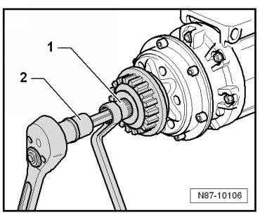
- Insert Multi-Point Adapter (3400) - 1 - in A/C compressor free-running hub using open end wrench 17 mm. Then, insert a multi-point socket insert M10 - 2 - in A/C compressor shaft.
- Loosen threaded connection by turning open end wrench left wile counterholding with reversible ratchet - 2 -.
Installing
Installation is carried out in the reverse order. When doing this note the following:
- First screw free-running hub on A/C compressor driveshaft by hand until limit stop.
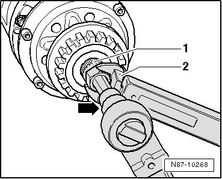
- Place Multi-Point Adapter (3400) - 1 - in A/C compressor free-running hub.
- Place a multi-point socket insert M10 - arrow - in A/C compressor shaft.
- Tighten free-running hub with Assembly Tool SW 17 (V.A.G 1331/6) - 2 - and Torque Wrench (V.A.G 1332).
Tightening torque is 80 Nm.
A/C Compressor with Drive Unit, Engine Code BAR
Special tools, testers and auxiliary items required
• Engine Support Bridge (10-222 A)
• Adapter (10-222 A/22)
• Engine Support Basic Set (T40091)
• Engine Support Supplement Set (T40093)
• A toothed gear and a driveshaft - B - drive the compressor.
• On vehicles with an 8 cylinder engine, the refrigerant circuit must be drained to remove the A/C compressor.
• A/C Compressor Bracket, Removing and Installing.
- Drain the refrigerant circuit.
- Remove the left and right air filter housing.
- Remove left front wheel.
- Remove noise insulation if necessary.
- Discharge coolant circuit.
- Remove the front and rear engine cover.
- Remove nuts and bolts - arrows - of retaining clamps for refrigerant line.
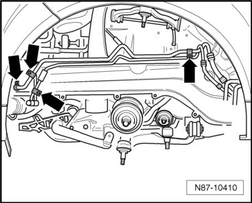
• Bolts of retaining clamps for refrigerant line are removed so that the refrigerant lines can be pushed aside slightly and not damaged when inserting engine support bridge.
Preparatory work to remove left engine support:
• This repair information only outlines the procedure for removing the left engine support. Always use the corresponding repair manual for removing the left engine support.
- Position Engine Support Bridge (10-222 A ) with Adapters (10-222 A/22) and Connectors (T40091/3) on to bolted flanges of fender.
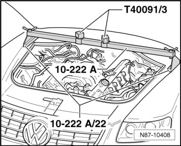
- Assemble the other components of the Engine Support Bridge (10-222 A) as shown in the illustration. To do so, position the Supports (10-222 A/19) on the longitudinal member seams be careful of the refrigerant lines on the longitudinal member when doing this.
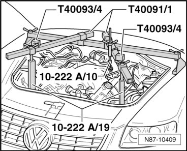
- Hang the hooks of the short Spindle (10-222 A/10) into the left rear engine lifting eye.
- Slide the Support (T40091/2) using Slider (T40093/5) into both Connectors (T40093/4).
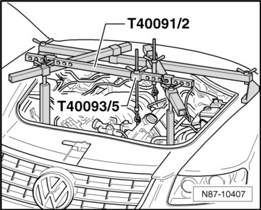
- Assemble the long spindle from Engine Support Sling (10-222 A) and hang the hook of the spindle into the left front engine lifting eye.
CAUTION!
Secure Support (T40091/2) using stud and cotter pins of Connector (T40093/4).
- Pre-tension the engine by uniformly tightening both spindles.
- Disconnect coolant hose - hoses -.
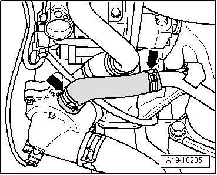
- Remove the nuts and bolts - 1 - through - 5 - and the left engine support.
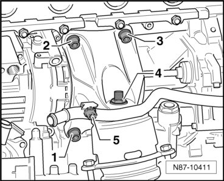
- Disconnect the connectors to the Refrigerant Temperature Sensor (G454) - 1 -.
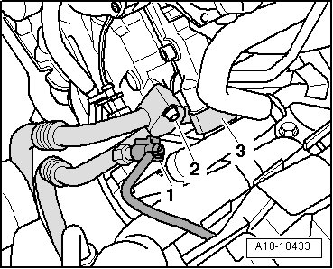
- Disconnect both refrigerant lines - 2 - and - 3 - from the A/C compressor.
• Seal open pipes and connections at condenser with suitable caps to prevent dirt and moisture from entering.
• Do not bend, kink or stretch lines or hoses as refrigerant lines and refrigerant hoses may be damaged.
- Hold the A/C compressor driveshaft - A - in place using an open-end wrench and turn compressor drive unit - B - in the direction of the arrow - C -.
• Do not turn the driveshaft - A -.
• Driveshaft - A - can be slid into drive wheel through the boot - E - after loosening threaded connection.
- Mark the 2-pin connector - 1 - to the A/C Compressor Regulator Valve (N280) so it does not get switched with the connector to the engine mount.
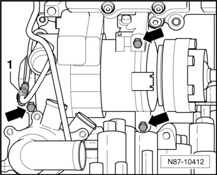
- Disconnect the 2-pin connector - 1 - to the A/C Compressor Regulator Valve (N280).
- Remove three bolts - arrows - tightening torque 25 Nm.
- Remove the A/C compressor forward.
- Remove the bushings - F - from the compressor if necessary.
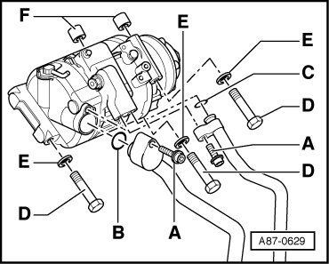
Installing
• There is a quantity of refrigerant oil in the removed A/C compressor. Follow the information on replacing the A/C compressor.
- Remove the bushings - C - from the A/C compressor bracket if necessary.
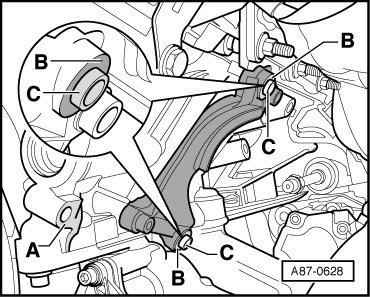
- Thoroughly clean the contact surfaces - A - and - B - on the bracket and the contact surfaces on the A/C compressor.
- Install the bushings - C - in the compressor bracket.
• Make sure the bushings - C - are seated correctly and the contact surfaces are clean. Bushings that are installed incorrectly and dirty or damaged contact surfaces can lead to alignment irregularities between the compressor and engine. Alignment irregularities over time lead to damage to the input shaft or compressor.
- If necessary, install the A/C compressor driveshaft - A - in the engine drive wheel and check the seating of it and the boot - E -.
• A clamp on the engine toothed drive gear flange - C - prevents the boot - E - from slipping.
- Check the A/C compressor and refrigerant line connections for damage or dirt.
- Install the A/C compressor with the bolts - D - and washers - E - on the bracket (bolt - D - tightening specification: 25 Nm). Be careful of the bushings - F -.
- Install the refrigerant lines on the A/C compressor with new, lightly oiled o-ring seals (bolt - A - tightening specification: 20 ± 3 Nm).
• Dimensions of O-ring seals - B - and - C -.
- Before installing the driveshaft, rotate the A/C compressor by hand after installing it 10 turns in the direction of the arrow - C - using the compressor drive unit - B -. This will prevent the compressor from being damaged the first time it is switched on.
• Refrigerant oil can collect in the compressor compression chamber after removing the compressor or adding new oil for example, by blowing through the refrigerant circuit. Rotating forces the refrigerant oil out of the compression chamber.
- Tighten the driveshaft, hold the compressor driveshaft - A - in place using an open-end wrench and turn the compressor drive unit - B - in the direction of the arrow - D - (tightening specification 60 Nm).
• Do not turn the driveshaft - A -.
• After installing the driveshaft - A -, check the boot - E - installation position.
- Re-install remaining components removed.
• Follow the tightening specifications for the bolts and nuts that have been removed.
- Fill the coolant and bleed the refrigerant circuit.
- Empty and fill the refrigerant circuit. Refer to"Refrigerant R134a - Servicing"
- Check the DTC memory in the Climatronic Control Module (J255) and erase any faults shown if necessary. --> Vehicle Diagnosis, Testing and Information System VAS 5051 in the "Guided Fault Finding" function
- Follow the information about starting the A/C system after installing the A/C compressor.
A/C Compressor, Engine Codes AYH, BKW and BLE
Special tools, testers and auxiliary items required
• Torque Wrench (V.A.G 1331/)
• A/C Service Station (VAS 6007A)
Removing
• To remove and install the A/C compressor, the engine must first be lifted with a shop crane and the engine bracket must be removed. Refer to Refrigerant R134a - Servicing General, Technical data.
• Observe notes, refer to --> [ Engine Compartment Refrigerant Circuit Components, 2 Zone and 4 Zone ] Engine Compartment Refrigerant Circuit Components, 2 Zone and 4 Zone.
• The tightening specification for bolts on the refrigerant lines to the A/C compressor is 20 ± 3 Nm.
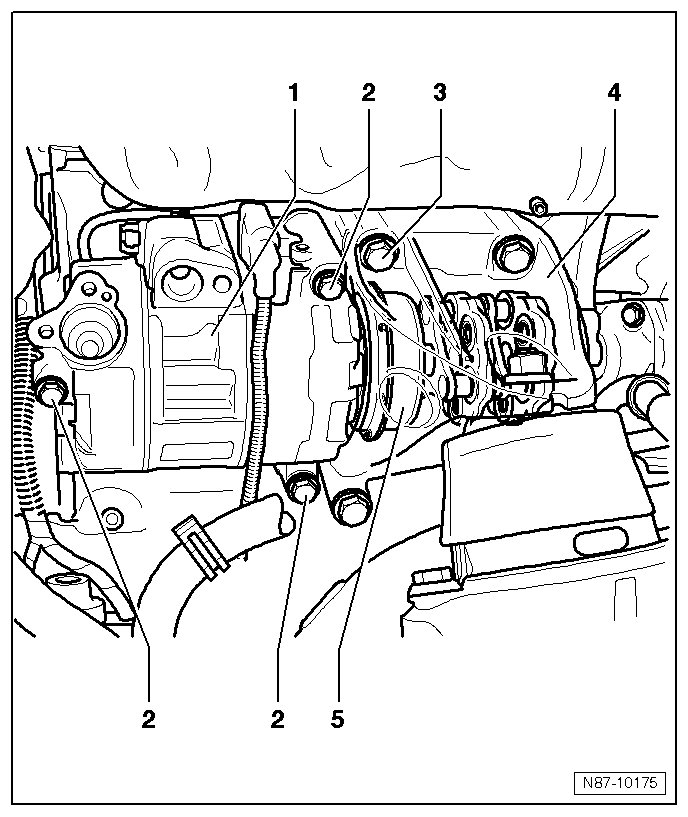
1 A/C Compressor
• Removing:
- Lift the engine with a workshop crane.
- Remove the engine bracket - 4 -.
- Disconnect the connector on the A/C compressor.
• Make sure the connector is secure on the A/C compressor.
- Remove refrigerant lines from A/C compressor.
• The bolt tightening specification is 20 ± 3 Nm.
- Remove the bolts - 2 - from the A/C compressor.
2 Screws M8x90
• 20 Nm
• Quantity: 3
• Ensure correct seating of 2 fitting screws at overload protection side between A/C compressor and engine block.
3 Screws M10x84
• 60 Nm
• Quantity: 4
4 Engine bracket
• Must be removed for removal of A/C compressor.
5 Overload protection
A/C Compressor and Bracket, Engine Codes: BAC, BLK, BPE and BPD
Special tools, testers and auxiliary items required
• Torque Wrench (V.A.G 1331/)
• A/C Service Station (VAS 6007A)
CAUTION!
There is a danger of ice-up.
Refrigerant leaks out if refrigerant circuit is not discharged.
Refrigerant must be extracted before opening the refrigerant circuit. If the refrigerant circuit is not opened within 10 minutes after extracting it, pressure may build up in the circuit again. The refrigerant must be extracted again.
• The auxiliary component bracket for A/C compressor and ancillary parts can be removed and installed without opening the refrigerant circuit.
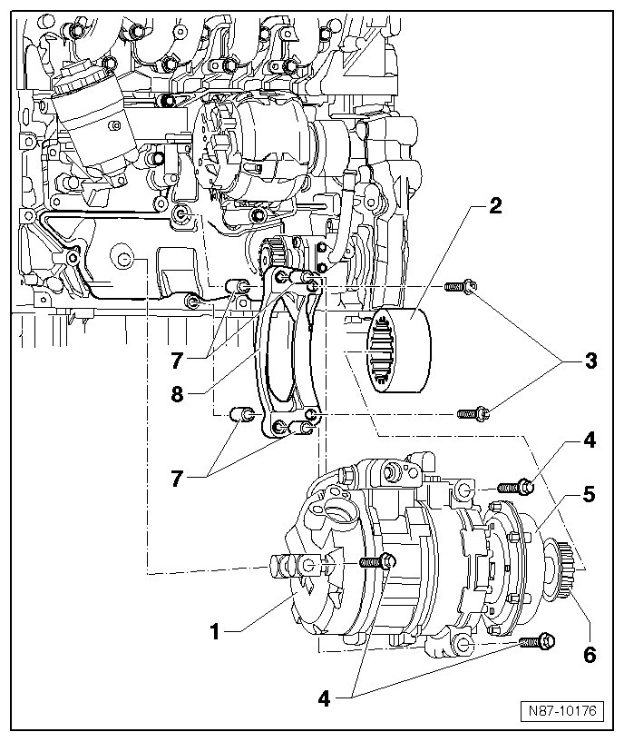
1 A/C Compressor
• Remove refrigerant lines from A/C compressor. The bolts have different lengths.
- Disconnect the connector on the A/C compressor.
• Make sure the connector is secure on the A/C compressor.
• The bolt tightening specification is 20 ± 3 Nm.
• Be careful of the alignment sleeves - 7 - between the A/C compressor, sub-assembly bracket and engine block - 8 -.
2 Torsion elastic clutch
• Between A/C compressor and power steering pump
3 Screws
• 20 Nm
• Quantity: 2
• Be careful of the alignment sleeves - 7 - between sub-assembly bracket - 8 - and engine block.
4 Screws
• 20 Nm
• Quantity: 3
5 Overload protection
• Function: Disconnects connection between A/C compressor and power steering vane pump when A/C compressor is blocked.
6 Take-up with free-running hub
• Removing and installing, refer to --> [ Mount with Freewheel on A/C Compressor ]
• Function: At a change in engine RPM, A/C compressor RPM can be adapted better and torsion elastic clutch is under less load.
7 Dowel sleeves
• Quantity: 4
• Ensure proper seating between auxiliary component bracket, engine block and A/C compressor
8 Auxiliary component bracket
• Number on auxiliary component bracket: 070 260 885 A
Securing A/C compressor to body
If A/C compressor is removed and refrigerant circuit not opened, A/C compressor must be secure to body using appropriate material, a welding wire for example.
Make sure that refrigerant hoses remain on A/C compressor without tension for this.
A/C Compressor with Bracket, Engine Code BJN
Special tools, testers and auxiliary items required
• Torque Wrench (VAS 5820)
• Torque Wrench (V.A.G 1331)
• Reversible Ratchet (VAS 5122)
• A/C Service Station (VAS 6007A) or newer model
• Socket Set (VAS 5532)
• Socket Insert (T10054)
• The A/C compressor sub-assembly bracket and its components can only be removed and installed if the refrigerant is extracted first, for example using the A/C Service Station (VAS 6007A).
• Observe notes. Refer to --> [ Engine Compartment Refrigerant Circuit Components, 2 Zone and 4 Zone ] Engine Compartment Refrigerant Circuit Components, 2 Zone and 4 Zone.
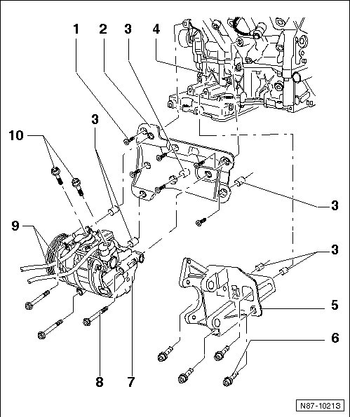
1 Multi-point socket head bolt
• M8•25
• 23 Nm
• Quantity: 6
2 A/C compressor sub-assembly bracket
• No. on housing 07C 260 885 E
Removing:
- Remove the noise insulation.
- Remove the A/C compressor - 7 -.
- Removing and installing P.A.S. vane pump.
- Remove the bolts - 1 - (quantity 6) from the A/C compressor sub-assembly bracket.
- Remove the sub-assembly bracket - 5 -.
- When installing the sub-assembly bracket, make sure the alignment sleeves - 3 - are seated correctly.
3 Dowel sleeves
• Ensure correctly seated when assembling
4 Crankcase
5 Power steering pump sub-assembly bracket
• Removing and installing P.A.S. vane pump.
6 Hexagon socket head combi bolt
• M10•30
• 32 Nm
• Quantity: 4
7 A/C Compressor
removing:
- Removing ribbed belt. Refer to --> Drive Belt
- Disconnect the connector on the A/C compressor.
• Make sure the connector is secure on the A/C compressor.
- Remove the bolts - 8 - from the A/C compressor.
8 Hexagon socket head combi bolt
• M8•34
• 23 Nm
• Quantity: 3
9 Refrigerant line
• Replace the O-rings after removing them.
10 Refrigerant line bolts
• 20 ± 3 Nm